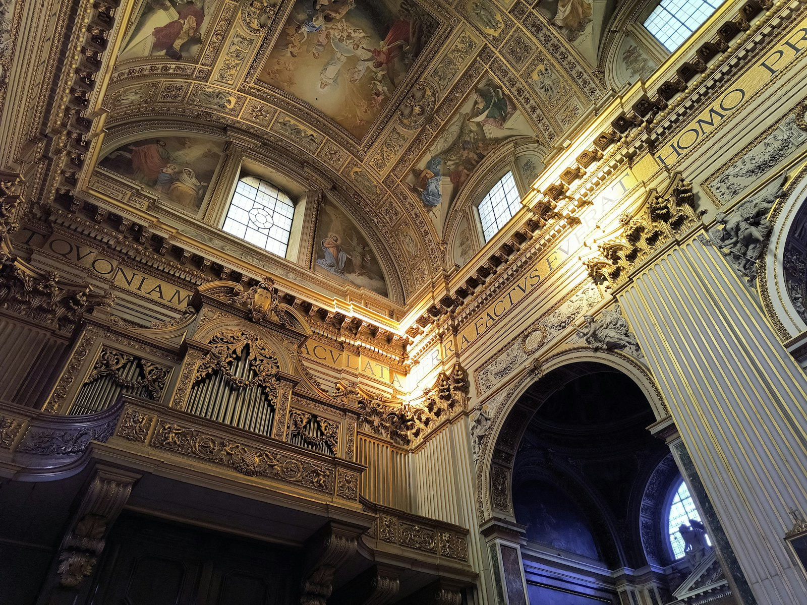
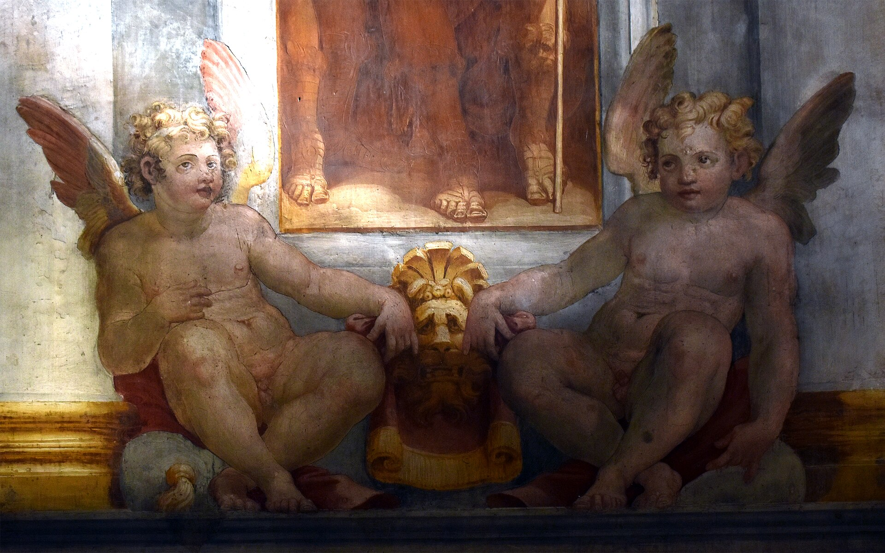
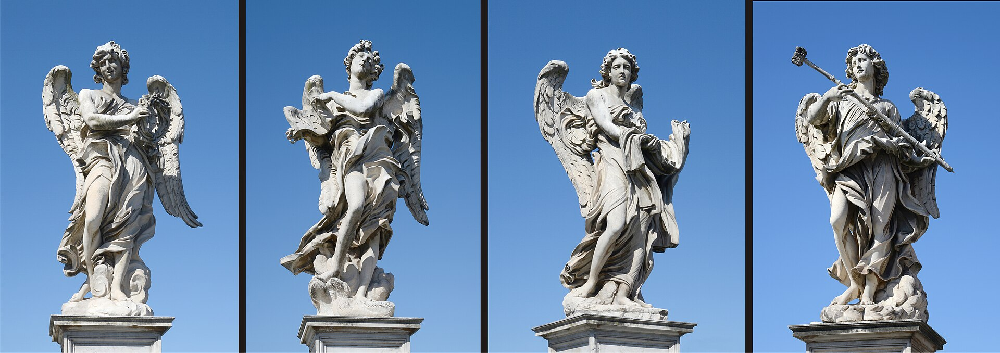
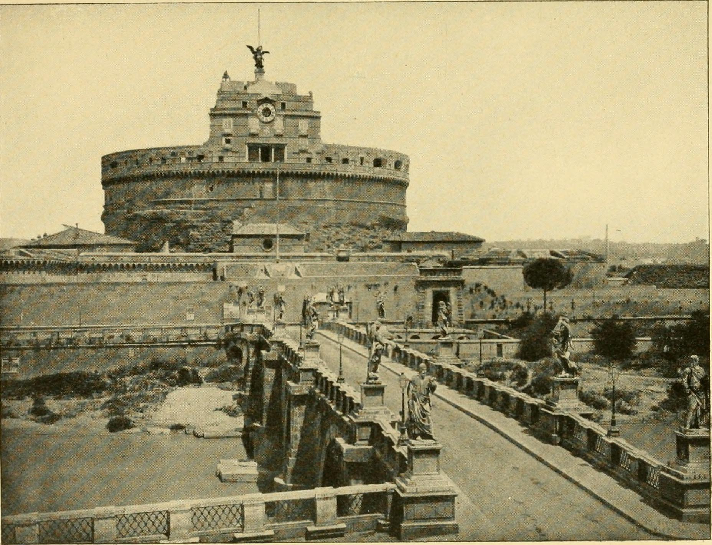
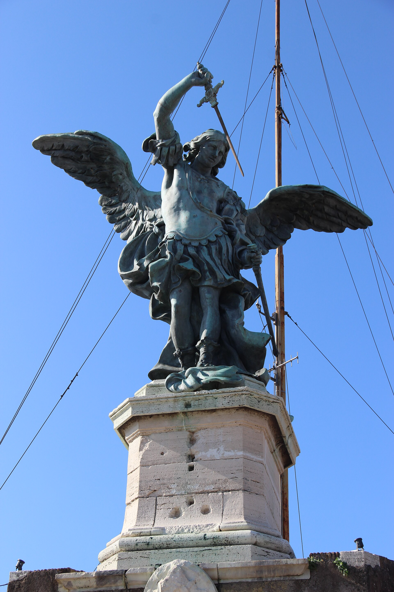

公元 134 年哈德良皇帝为自己与继任者们修建的陵墓，此后一千八百年里陆续当过要塞、教皇避难所、军火库、监狱，今天是国立博物馆——罗马“建筑再就业”的极致案例。顶层平台是看圣彼得穹顶的最佳角度。
看点路线
Il Percorso
- 1底层环形墓道：哈德良时代的螺旋坡道（爬起来会想起停车场，但这是公元 2 世纪的）
- 2中层文艺复兴教皇公寓：保罗三世私室壁画
- 3顶层天使铜像与 360° 平台——圣彼得大教堂穹顶的最佳取景位
- 4出堡走圣天使桥：贝尼尼工作室的十座天使像
城堡看点
Il Castello · 5 层时空穿越

哈德良的螺旋墓道
一条贯通整座建筑的罗马式螺旋坡道，当年抬着皇帝石棺的送葬队伍由此上行至陵墓核心。两千年后游客仍走这条路——只不过队伍从送葬变成了观光。

教皇公寓
文艺复兴时期教皇把陵墓上半部改成行宫：保罗三世私室的天顶画由当时一流画家团队完成，奢华程度直追梵蒂冈——教皇的“末日地堡”也要装修。

秘密通道 Passetto
一条 800 米的高空城墙走廊，连接圣天使堡与梵蒂冈。教皇克莱门特七世在 1527 年“罗马之劫”中由此狂奔逃命——教皇的逃生通道，权力者安全感的真实尺寸。
圣天使桥
哈德良时代的桥，贝尼尼工作室的十位持刑天使立于两侧（两尊为贝尼尼亲制，原件已移入教堂）。从桥头望堡顶，是罗马最经典的一帧。

囚室与布鲁诺
城堡当过千年监狱，厚墙小窗的囚室里关过贵族、炼金术士与哲学家。展厅里复原的刑具与囚室提醒游客：这座“博物馆”的上一份工作是人间炼狱。

大天使迈克尔铜像
公元 590 年大瘟疫中，教皇格里高利一世看见天使迈克尔在堡顶“收剑入鞘”——瘟疫就此退去，城堡由此得名“圣天使”。今天堡顶的天使铜像仍注视着台伯河，剑已收了两千年。
历史故事
Le Storie
壹1527：教皇的逃亡之夜
1527 年 5 月，神圣罗马帝国的雇佣军哗变，一路杀进罗马--天主教世界的首都被天主教军队洗劫八个月，史称“罗马之劫”。混乱当夜，教皇克莱门特七世从梵蒂冈的走廊 Passetto 逃往圣天使堡。
传说他由瑞士卫队断后：147 名卫兵战死 42 人才拖住追兵--这就是今天瑞士卫队誓词里“5 月 6 日”的由来，每年这一天新兵在梵蒂冈宣誓。
教皇在城堡里被围困一个月，最后乔装成商人、付了大笔赎金才脱身。罗马之劫摧毁了文艺复兴的黄金时代，历史在这里拐了个弯，弯道的中心就是这座城堡。
贰《托斯卡》的最后一幕
普契尼歌剧《托斯卡》的结尾就发生在这里：歌唱家托斯卡为救爱人假意委身警察局长斯卡皮亚，反手将其刺死；爱人卡瓦拉多西仍被处决，托斯卡绝望之下从圣天使堡顶一跃而下。
今天的游客站在顶层平台，脚下就是歌剧史上最著名的“跳台”--护栏很矮，罗马的天际线在眼前铺开。
每年夏季歌剧季，城堡庭院里时常上演《托斯卡》：在故事发生的地方看故事结局，是这座“建筑再就业之王”最诗性的兼职。
叁皇帝的最后旅途
公元 139 年，哈德良皇帝去世，遗体从巴亚的别墅运回罗马，盛大的送葬队列跨过他生前建好的桥，把他抬进这座他自己设计的陵墓--那是他人生最后一次“穿过自己的作品”。
此后近百年，历代皇帝与皇后的骨灰瓮安放于此，直到 217 年卡拉卡拉时代最后一次入葬。
今天入口的螺旋坡道就是当年的送葬通道：两千年后游客走的这条路，是为抬棺而设计的。坡道的缓，是给皇帝最后的体面。
肆天使收剑
公元 590 年，罗马瘟疫肆虐。教皇格里高利一世率信众 penitential 游行，忽见大天使迈克尔显现在陵墓顶上“收剑入鞘”--瘟疫自此退去。
城堡由此得名“圣天使”，此后历代堡顶的天使像换了一茬又一茬：石头的、木头的、铜的，直到 1753 年那尊至今仍在的青铜大天使。
一场瘟疫、一个幻象、一座陵墓的改名--罗马最著名的“改名事件”，本质是一次公共卫生事件的心理治疗。
伍铅皮下的囚徒们
城堡顶层曾是教皇监狱“铅皮囚室”（Piombi）：铅皮屋顶夏烤冬冻，贝卡里亚笔下的重犯、政治密谋者与伪造者在此辗转。
展厅复原的囚室里，墙上留着历代囚犯的涂鸦：拉丁文、日期、十字架与祈祷。刻痕最深的一位，据说蹲了三十年。
从教皇公寓到囚室只隔两层楼--权力的顶层与地窖，在垂直距离上从不超过二十米。
陆布鲁诺的最后罗马居所
1592-1593 年，哲学家乔尔达诺·布鲁诺被威尼斯宗教裁判所引渡回罗马，据说关押审讯的第一站包括圣天使堡的囚室，随后转入圣部监狱。
八年的审讯没能让他收回“宇宙无限、众星皆世界”的观点。1600 年 2 月 17 日，他在鲜花广场被烧死。
1889 年，就在烧死他的地方立起了他的雕像--罗马人自己给“错误的判决”立的道歉碑。城堡囚室的展签，是这段往事的第一页。
柒贝尼尼的十位天使
1669 年起，圣天使桥两侧竖起十位持刑天使：十字架、荆棘冠、钉子、长矛与蘸醋的海绵--基督受难的全套刑具，各由一尊天使捧着。
其中两尊出自贝尼尼亲手（今移入圣安德烈亚教堂保护，桥上是复制品），其余由其工坊按他的模型完成。走过桥去梵蒂冈，等于读一遍受难清单。
从教皇的视角看，这座桥是通往圣彼得的最后一段“仪仗道”--朝圣者过桥时的每一步，都被天使检阅。
捌1870：城堡见证明断的王朝
1870 年 9 月 20 日，意大利王国的军队在庇亚门轰开城墙，罗马并入新王国。教皇的世俗权力终结，退入梵蒂冈自囚--史称“罗马问题”的开始。
圣天使堡作为教皇堡垒的职能就此终结，先做兵营，后于 20 世纪初转向博物馆。
1929 年《拉特兰条约》才正式解决这段尴尬：城堡与梵蒂冈、圣彼得一起，被写进现代国家的新地图。一座陵墓的一生，就此集齐了皇帝、教皇与共和国三个朝代。
玖从军火库到博物馆
文艺复兴时期城堡一度是军火库与造币厂：教皇的钱与炮弹在同一栋楼里生产。中庭那些巨大的石球，是当年配重炮的遗留。
19 世纪末，建筑师的考证性修复把它“还原”成想象中的古代陵墓面貌，1925? 年起作为国立博物馆开放--今天馆藏的陶瓷、兵器与绘画，是那次转向的成果。
看展时留意一个细节：博物馆动线的顺序本身在讲“时间”--从皇帝的螺旋坡道出发，一层层爬过教皇、监狱，最后在天使与罗马全景处结束。建筑即展品。
拾顶层平台：罗马的圆心
站在堡顶，你位于“教皇的逃生通道、皇帝的墓顶与歌剧的跳台”三重历史交点，视野 360 度：圣彼得穹顶、贾尼科洛山、台伯河九曲与整片老城红顶。
近处的圣天使桥车流、远处的维托里亚诺白宫--两个罗马在你面前分层。日落前一小时来，光线会把台伯河染成金色。
一部手机、一杯堡顶咖啡（贵但值得一次）：为罗马最经典的圆形天际线干杯。
参观贴士
Consigli Pratici
- 与梵蒂冈联游最顺：上午梵蒂冈博物馆 -> 出口沿城墙走 Passetto 方向 -> 下午圣天使堡
- 黄昏登顶看圣彼得穹顶与台伯河落日，是罗马排名前三的观景位
- 圣天使桥上十座天使像的雕件是复制品（原件藏于圣安德烈教堂附属展室），桥上拍照注意扒手
- 咖啡馆在顶层平台，价格感人但景观值回一半
顺路同游
Da Non Perdere